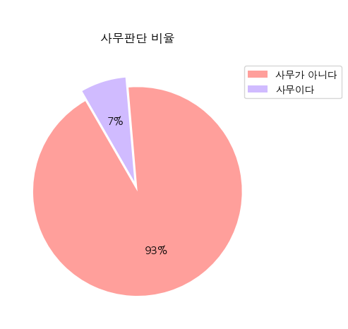
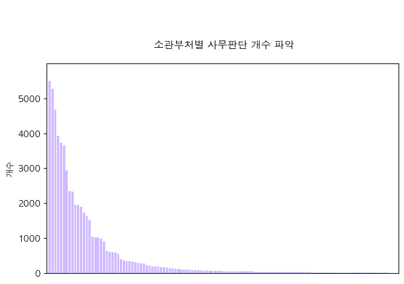
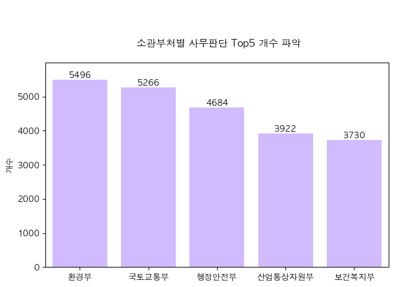
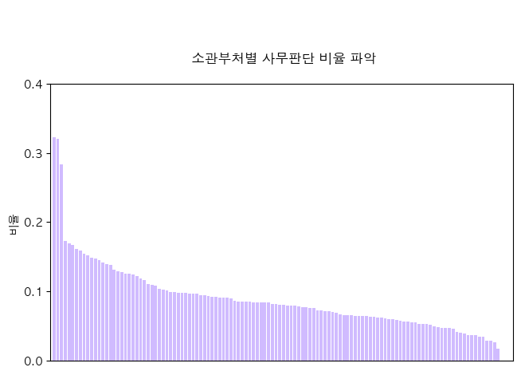
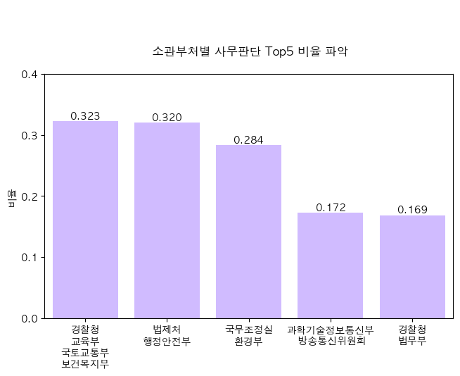
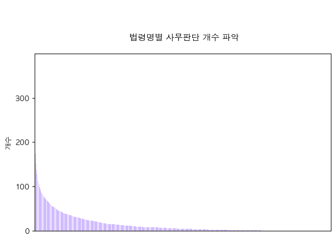
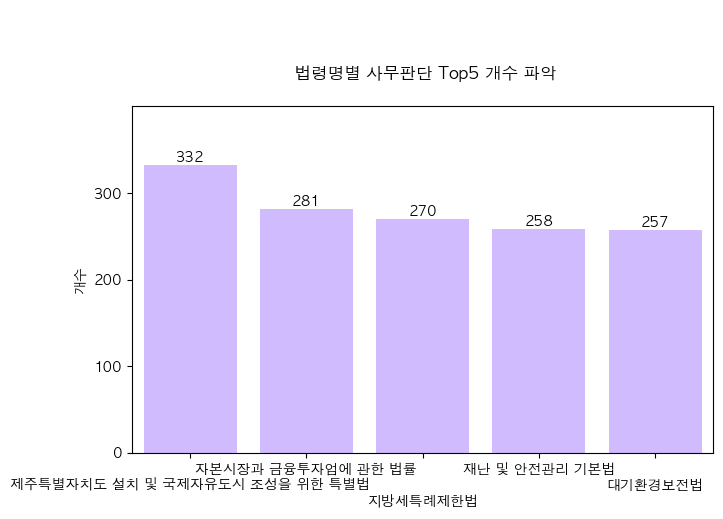
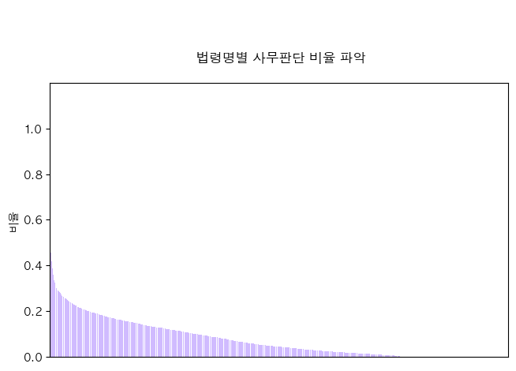
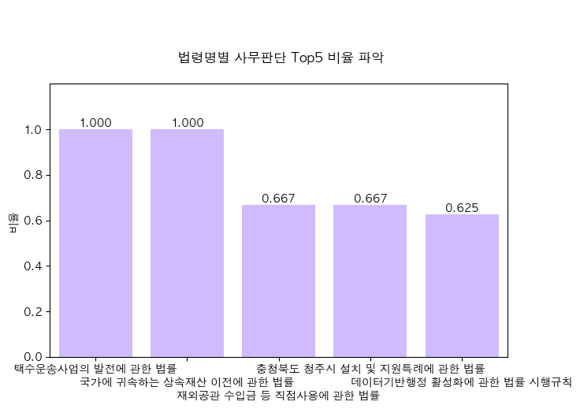
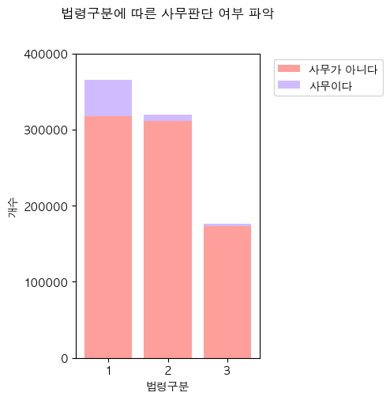

# 필요 라이브러리 설치
import pandas as pd
import numpy as np
import seaborn as sns
import matplotlib.pyplot as plt
import matplotlib.font_manager as fm
from matplotlib import rc
%matplotlib inline
rc('font', family='AppleGothic')
plt.rcParams['axes.unicode_minus'] = FalseEDA ( BaseTable_2.csv 사용 )
0. 라이브러리 설치 및 데이터 불러오기
# 데이터 load
data = pd.read_csv('/Users/limdonggeon/Desktop/KPMG/Work/Law/BaseTable_2.csv')/var/folders/fs/zfypqyv96hs22x794hfx0ycm0000gn/T/ipykernel_35948/1174812850.py:2: DtypeWarning: Columns (4,5,13,16,17,18,19,24) have mixed types. Specify dtype option on import or set low_memory=False.
data = pd.read_csv('/Users/limdonggeon/Desktop/KPMG/Work/Law/BaseTable_2.csv')data.info()<class 'pandas.core.frame.DataFrame'>
RangeIndex: 861624 entries, 0 to 861623
Data columns (total 25 columns):
# Column Non-Null Count Dtype
--- ------ -------------- -----
0 소관부처명 861624 non-null object
1 법령명 861624 non-null object
2 법령구분 861624 non-null int64
3 조번호 861043 non-null object
4 항번호 666511 non-null object
5 호번호 504874 non-null object
6 조문제목 861624 non-null object
7 조문 861624 non-null object
8 사무판단 861624 non-null int64
9 사무판단근거 700810 non-null object
10 사무명 60068 non-null object
11 수행주체 60069 non-null object
12 사무유형 60026 non-null object
13 위임사무판단 761044 non-null object
14 위임근거규정 5292 non-null object
15 수임기관 4398 non-null object
16 특행기관 93064 non-null object
17 재위임사무판단 702426 non-null object
18 재위임근거규정 53 non-null object
19 재수임기관 13 non-null object
20 위탁사무판단 758608 non-null float64
21 위탁근거규정 3970 non-null object
22 수탁기관 3943 non-null object
23 사무유형(소분류) 60026 non-null object
24 기타 3 non-null object
dtypes: float64(1), int64(2), object(22)
memory usage: 164.3+ MB그래프 그리기
1) 사무판단 개수 파악
- 사무판단 종류: 3개
- 사무판단이 0인 경우 : 801598개
- 사무판단이 1인 경우 : 60023개
- 사무판단이 2인 경우 : 3개
- 사무판단이 2인 경우 빼고 0과 1인 경우만 비교하기
def judgment_graph(df):
# 전체 갯수
N = len(df)
# 0의 비율, 1의 비율 계산하기
ratio_0 = (len(df[df['사무판단'] == 0]))/N *100
print(f" 0의 비율 : {ratio_0}")
ratio_1 = (len(df[df['사무판단'] == 1]))/N *100
print(f" 1의 비율 : {ratio_1}")
# pie chart 생성
ratio = [ratio_0, ratio_1]
labels = [0,1]
explode = [0, 0.10]
colors = sns.color_palette('pastel')[3:5]
plt.pie(ratio, colors = colors, autopct='%.0f%%', startangle= 120, explode=explode)
plt.legend(['사무가 아니다', '사무이다'], bbox_to_anchor=(1.3, 1))
plt.title('\n\n 사무판단 비율 \n')
plt.show()judgment_graph(data) 0의 비율 : 93.03338811360872
1의 비율 : 6.966263706674837
2) 소관부처명에 따른 사무판단
- 소관부처명의 종류 : 122개
- 사무가 가장 많은 5개 소관부처명 파악
- 사무 비율이 가장 큰 5개 소관부처명 파악
사무가 가장 많은 소관부처명 파악
def num_department_judgment_graph(df):
# 각 소관부처명 별 사무판단 갯수 파악
department_judgment = []
for ii in df['소관부처명'].unique():
department_count_0 = len(df.loc[(df['소관부처명']==ii) & (df['사무판단']==0)])
department_count_1 = len(df.loc[(df['소관부처명']==ii) & (df['사무판단']==1)])
# [1인 갯수, 0인 갯수, 1인 비율, 소관부처명]
department_judgment.append([department_count_1, department_count_0, department_count_1/(department_count_0+department_count_1), ii])
# 사무가 가장 많은 소관부처명 파악
department_judgment.sort(key=lambda x:x[0], reverse = True)
num_department_judgment = []
num_department = []
for i in range(len(department_judgment)):
num_department_judgment.append(department_judgment[i][0])
num_department.append(department_judgment[i][3])
# 사무가 많은 소관부처명 순서대로 막대 그래프
fig, ax = plt.subplots(figsize=(7.5, 4.5))
colors = sns.color_palette('pastel')[4]
plt.bar(range(len(num_department_judgment)), num_department_judgment, color=colors)
plt.title('\n\n\n 소관부처별 사무판단 개수 파악\n')
plt.ylabel('개수')
plt.xlim([-1,len(num_department_judgment)])
plt.xticks([])
plt.ylim([0,6000]);
plt.yticks(np.arange(0, 6000, step=1000));
# 사무가 가장 많은 소관부처명 5개 순서대로 막대 그래프
fig, ax = plt.subplots(figsize=(7.5, 4.5))
colors = sns.color_palette('pastel')[4]
bar = plt.bar(range(5), num_department_judgment[:5], color=colors)
plt.title('\n\n\n 소관부처별 사무판단 Top5 개수 파악\n')
plt.ylabel('개수')
plt.xlim([-0.5,4.5])
plt.xticks(np.arange(0, 5, 1), labels = [num_department[0],num_department[1],num_department[2],num_department[3],num_department[4]])
plt.ylim([0,6000]);
plt.yticks(np.arange(0, 6000, step=1000));
for rect in bar:
height = rect.get_height()
plt.text(rect.get_x() + rect.get_width()/2.0, height, '%d' % height, ha='center', va='bottom', size = 10)num_department_judgment_graph(data)

사무비율이 가장 큰 소관부처명 파악
def ratio_department_judgment_graph(df):
# 각 소관부처명 별 사무판단 갯수 파악
department_judgment = []
for ii in df['소관부처명'].unique():
department_count_0 = len(df.loc[(df['소관부처명']==ii) & (df['사무판단']==0)])
department_count_1 = len(df.loc[(df['소관부처명']==ii) & (df['사무판단']==1)])
# [1인 갯수, 0인 갯수, 1인 비율, 소관부처명]
department_judgment.append([department_count_1, department_count_0, department_count_1/(department_count_0+department_count_1), ii])
# 사무비율이 가장 큰 소관부처명 파악
department_judgment.sort(key=lambda x:x[2], reverse = True)
ratio_department_judgment = []
ratio_department = []
for i in range(len(department_judgment)):
ratio_department_judgment.append(department_judgment[i][2])
ratio_department.append(department_judgment[i][3])
# 사무가 많은 소관부처명 순서대로 막대 그래프
fig, ax = plt.subplots(figsize=(7.5, 4.5))
colors = sns.color_palette('pastel')[4]
plt.bar(range(len(ratio_department_judgment)), ratio_department_judgment, color=colors)
plt.title('\n\n\n 소관부처별 사무판단 비율 파악\n')
plt.ylabel('비율')
plt.xlim([-1,len(ratio_department_judgment)])
plt.xticks([])
plt.ylim([0,0.4]);
plt.yticks(np.arange(0, 0.5, step=0.1));
# 사무가 가장 많은 소관부처명 5개 순서대로 막대 그래프
fig, ax = plt.subplots(figsize=(7.5, 4.5))
colors = sns.color_palette('pastel')[4]
bar = plt.bar(range(5), ratio_department_judgment[:5], color=colors)
plt.title('\n\n\n 소관부처별 사무판단 Top5 비율 파악\n')
plt.ylabel('비율')
plt.xlim([-0.5,4.5])
plt.xticks(np.arange(0, 5, 1), labels = [ratio_department[0].replace(',','\n'),ratio_department[1].replace(',','\n'),ratio_department[2].replace(',','\n'),ratio_department[3].replace(',','\n'),ratio_department[4].replace(',','\n')])
plt.ylim([0,0.4]);
plt.yticks(np.arange(0, 0.5, step=0.1));
for rect in bar:
height = rect.get_height()
plt.text(rect.get_x() + rect.get_width()/2.0, height, '%.3f' % height, ha='center', va='bottom', size = 10)ratio_department_judgment_graph(data)

3) 법령명에 따른 사무판단
- 법령명의 종류 : 4324개
- 사무가 가장 많은 5개 법령명 파악
- 사무 비율이 가장 큰 5개 법령명 파악
사무가 가장 많은 법령명 파악
def num_lawname_judgment_graph(df):
# 각 법령명 별 사무판단 갯수 파악
lawname_judgment = []
for ii in df['법령명'].unique():
lawname_count_0 = len(df.loc[(df['법령명']==ii) & (df['사무판단']==0)])
lawname_count_1 = len(df.loc[(df['법령명']==ii) & (df['사무판단']==1)])
# [1인 갯수, 0인 갯수, 1인 비율, 법령명]
lawname_judgment.append([lawname_count_1, lawname_count_0, lawname_count_1/(lawname_count_0+lawname_count_1), ii])
# 사무가 가장 많은 법령명 파악
lawname_judgment.sort(key=lambda x:x[0], reverse = True)
num_lawname_judgment = []
num_lawname = []
for i in range(len(lawname_judgment)):
num_lawname_judgment.append(lawname_judgment[i][0])
num_lawname.append(lawname_judgment[i][3])
# 사무가 많은 법령명 순서대로 막대 그래프
fig, ax = plt.subplots(figsize=(7.5, 4.5))
colors = sns.color_palette('pastel')[4]
plt.bar(range(len(num_lawname_judgment)), num_lawname_judgment, color=colors)
plt.title('\n\n\n 법령명별 사무판단 개수 파악\n')
plt.ylabel('개수')
plt.xlim([-1,len(num_lawname_judgment)])
plt.xticks([])
plt.ylim([0,400]);
plt.yticks(np.arange(0, 400, step=100));
# 사무가 가장 많은 법령명 5개 순서대로 막대 그래프
fig, ax = plt.subplots(figsize=(7.5, 4.5))
colors = sns.color_palette('pastel')[4]
bar = plt.bar(range(5), num_lawname_judgment[:5], color=colors)
plt.title('\n\n\n 법령명별 사무판단 Top5 개수 파악\n')
plt.ylabel('개수')
plt.xlim([-0.5,4.5])
plt.xticks(np.arange(0, 5, 1), labels = ['\n'+num_lawname[0],num_lawname[1],'\n\n'+num_lawname[2],num_lawname[3],'\n'+num_lawname[4]])
plt.ylim([0,400]);
plt.yticks(np.arange(0, 400, step=100));
for rect in bar:
height = rect.get_height()
plt.text(rect.get_x() + rect.get_width()/2.0, height, '%d' % height, ha='center', va='bottom', size = 10)num_lawname_judgment_graph(data)

사무비율이 가장 큰 법령명 파악
def ratio_lawname_judgment_graph(df):
# 각 법령명 별 사무판단 갯수 파악
lawname_judgment = []
for ii in df['법령명'].unique():
lawname_count_0 = len(df.loc[(df['법령명']==ii) & (df['사무판단']==0)])
lawname_count_1 = len(df.loc[(df['법령명']==ii) & (df['사무판단']==1)])
# [1인 갯수, 0인 갯수, 1인 비율, 법령명]
lawname_judgment.append([lawname_count_1, lawname_count_0, lawname_count_1/(lawname_count_0+lawname_count_1), ii])
# 사무가 가장 많은 법령명 파악
lawname_judgment.sort(key=lambda x:x[2], reverse = True)
ratio_lawname_judgment = []
ratio_lawname = []
for i in range(len(lawname_judgment)):
ratio_lawname_judgment.append(lawname_judgment[i][2])
ratio_lawname.append(lawname_judgment[i][3])
# 사무가 많은 법령명 순서대로 막대 그래프
fig, ax = plt.subplots(figsize=(7.5, 4.5))
colors = sns.color_palette('pastel')[4]
plt.bar(range(len(ratio_lawname_judgment)), ratio_lawname_judgment, color=colors)
plt.title('\n\n\n 법령명별 사무판단 비율 파악\n')
plt.ylabel('비율')
plt.xlim([-1,len(ratio_lawname_judgment)])
plt.xticks([])
plt.ylim([0,1.2]);
plt.yticks(np.arange(0, 1.2, step=0.2));
# 사무가 가장 많은 법령명 5개 순서대로 막대 그래프
fig, ax = plt.subplots(figsize=(7.5, 4.5))
colors = sns.color_palette('pastel')[4]
bar = plt.bar(range(5), ratio_lawname_judgment[:5], color=colors)
plt.title('\n\n\n 법령명별 사무판단 Top5 비율 파악\n')
plt.ylabel('비율')
plt.xlim([-0.5,4.5])
plt.xticks(np.arange(0, 5, 1), labels = [ratio_lawname[0],'\n'+ratio_lawname[1],'\n\n'+ratio_lawname[2],ratio_lawname[3],'\n'+ratio_lawname[4]])
plt.ylim([0,1.2]);
plt.yticks(np.arange(0, 1.2, step=0.2));
for rect in bar:
height = rect.get_height()
plt.text(rect.get_x() + rect.get_width()/2.0, height, '%.3f' % height, ha='center', va='bottom', size = 10)ratio_lawname_judgment_graph(data)

4) 법령구분에 따른 사무판단
- 법령구분 종류: 3개
- 법령구분이 1인 경우 : 365424개
- 법령구분이 2인 경우 : 319805개
- 법령구분이 3인 경우 : 176395개
def lawclass_judgment_graph(df):
groups = ['1', '2', '3']
values1 = [len(df.loc[(df['법령구분']==1) & (df['사무판단']==0) ]), len(df.loc[(df['법령구분']==2) & (df['사무판단']==0) ]), len(df.loc[(df['법령구분']==3) & (df['사무판단']==0) ])]
values2 = [len(df.loc[(df['법령구분']==1) & (df['사무판단']==1) ]), len(df.loc[(df['법령구분']==2) & (df['사무판단']==1) ]), len(df.loc[(df['법령구분']==3) & (df['사무판단']==1) ])]
fig, ax = plt.subplots(figsize=(3, 5))
colors = sns.color_palette('pastel')[3:5]
# stack bar 로 구성
ax.bar(groups, values1, color = colors[0])
ax.bar(groups, values2, bottom = values1, color = colors[1])
plt.title('법령구분에 따른 사무판단 여부 파악\n\n')
plt.xlabel('법령구분')
plt.ylabel('개수')
plt.legend(['사무가 아니다', '사무이다'], bbox_to_anchor=(1.7, 1))
plt.ylim([0,400000])
plt.yticks(np.arange(0, 500000, step=100000))
plt.show()lawclass_judgment_graph(data)
# def law_work_count(i):
# a = len(df.loc[(df['법령구분']==i) & (df['사무판단']==0), ])
# b = len(df.loc[(df['법령구분']==i) & (df['사무판단']==1), ])
# c = len(df.loc[(df['법령구분']==i) & (df['사무판단']==2), ])
# print(f"법령 구분 {i}일때 ========")
# print(f"사무x: {a}")
# print(f"사무O: {b}")
# print(f"애매: {c}")
# result = [a, b, c]
# return result# result = []
# for i in range(1, 4):
# result.append(law_work_count(i))
# result# # 법령 구분에 따른 사무판단 비율 계산
# ratio_df = df.groupby(['법령구분', '사무판단']).size().unstack().T
# ratio_df = ratio_df.div(ratio_df.sum(axis=1), axis=0)
# # 비율을 시각화
# ratio_df.T.plot(kind='bar', stacked=True)
# plt.title('법령구분에 따른 사무판단 비율')
# plt.xlabel('법령구분')
# plt.ylabel('Administrative Decision')
# plt.show()